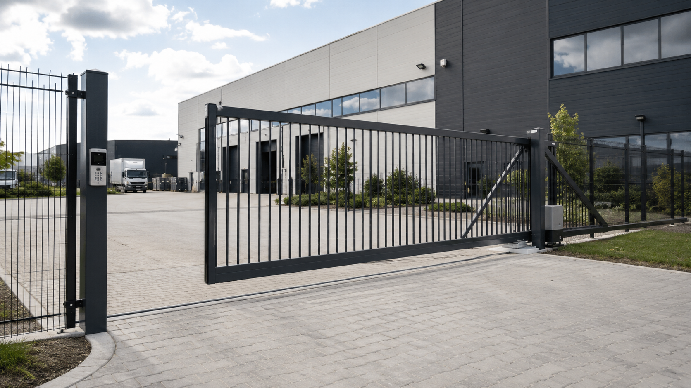
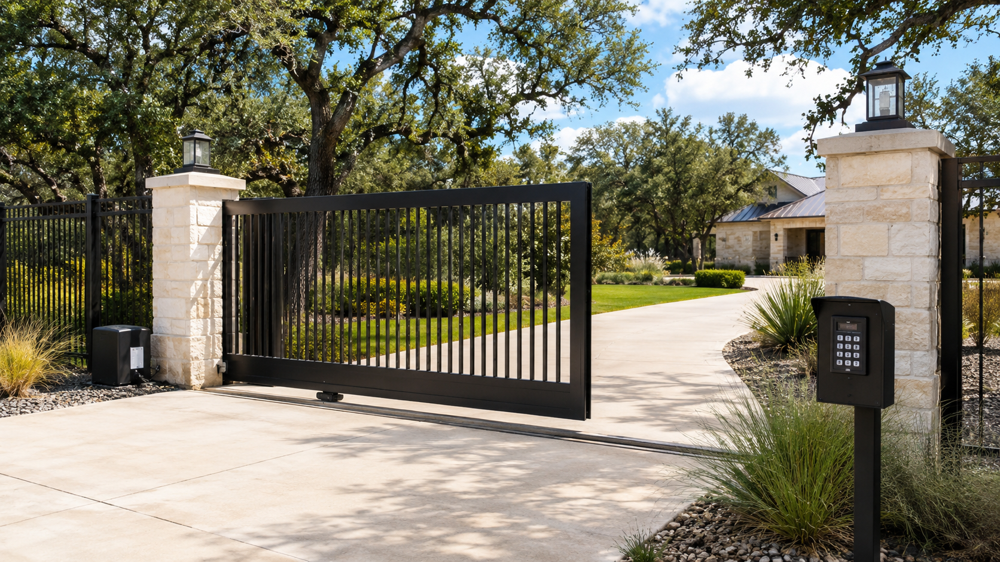
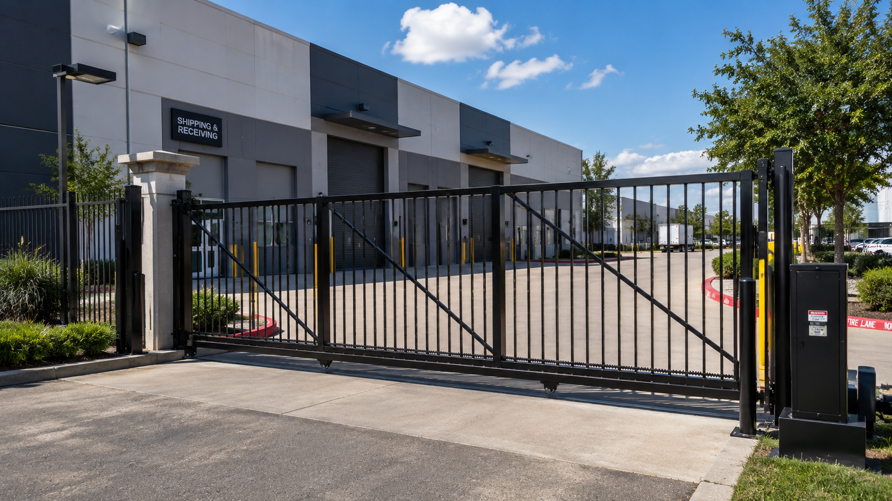

Slide & Swing Gate Installation
Installation of automatic gate systems based on the opening, operating requirements, site conditions, and gate configuration.
Automatic Gate Service
David's Overhead Door provides automatic slide gate installation, repair, operator service, troubleshooting, adjustment, and maintenance throughout Irving and the Dallas-Fort Worth area.

Automatic Slide Gate Services
Automatic slide gate systems depend on the gate, operator, hardware, alignment, and related operating components working together properly. David's Overhead Door provides service for automatic slide gate systems throughout DFW.
Installation of automatic gate systems based on the opening, operating requirements, site conditions, and gate configuration.
Troubleshooting and repair for gates that are damaged, difficult to operate, misaligned, stuck, or not traveling correctly.
Troubleshooting, service, adjustment, replacement, and installation of automatic slide gate operators.
Evaluation and service of slide gate tracks, rollers, brackets, guides, hardware, and related operating components.
Adjustment and alignment to help correct gates that drag, bind, travel unevenly, or operate improperly.
Inspection, adjustment, lubrication where appropriate, and identification of visibly worn or damaged components.
Gate Troubleshooting
Automatic gate problems can involve the gate itself, operator, alignment, track, rollers, guides, hardware, or other operating components.
David's Overhead Door evaluates the system to help identify the cause of the operating problem before recommending repair or replacement.

Automatic Gate Installation
Automatic gates are commonly used at commercial, industrial, multifamily, storage, service, and secured vehicle-access properties.
Installation requirements vary based on the opening, gate configuration, available travel distance, operator requirements, usage, and existing site conditions.
Commercial Applications
David's Overhead Door can provide automatic slide & swing gate service for a variety of commercial and facility applications throughout the DFW area.

Experienced Service
David's experience with automatic gates, overhead doors, operators, tracks, rollers, hardware, and related operating equipment provides a practical foundation for troubleshooting complete moving-door and gate systems.
Automatic Gate Service Area
David's Overhead Door is based in Irving, Texas and provides mobile automatic slide gate service throughout Dallas-Fort Worth and surrounding communities.
Need Automatic Gate Service?
Call or schedule service for automatic slide gate installation, repair, operator service, troubleshooting, adjustment, or maintenance.